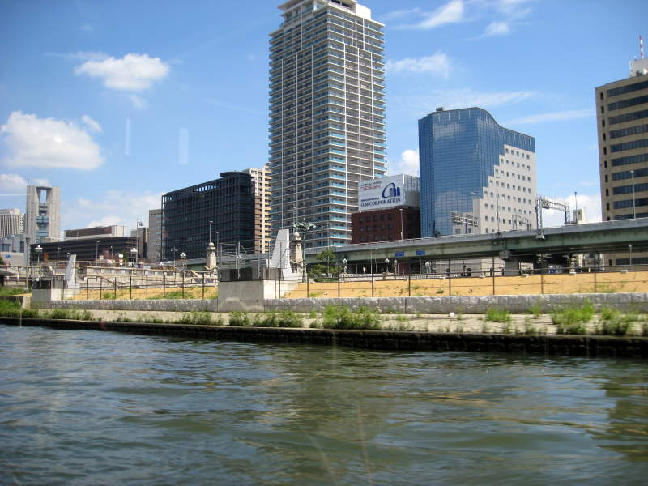

Paul, Miller and I went for a cruise tour of Osaka. The bridge isn't the important thing. You can see a view of Osaka Castle in the background. Otherwise I might've chucked this picture.
We passed this very unique bridge in Osaka. I could have sworn I've seen other unique bridges just like it though.
In the distance we saw colorful buoys spread across the water.


Near the buoys there were rowing crews racing around.
Water shimmers along the line of rather undistinguished buildings.

These Osaka buildings looked nice however.
That building in the back looks like they melted some metal plates over the building to make a roof, like a slice of cheese on a burger.
This blue and red houseboat can hold a lot of sake I bet.
I saw this pretty tree that I wanted to take a picture of. So I did.
The boat we were on was a weird boat. You can see the collapsing post behind Miller's head. When the boat was to go under a bridge or something, they would first actually lower the ceiling before proceeding. It actually went lower than shown here. So much so that we were an inch away from having to duck down. Fortunately, the ceiling lowered very slowly, so it's unlikely to cause brain damage.
Back